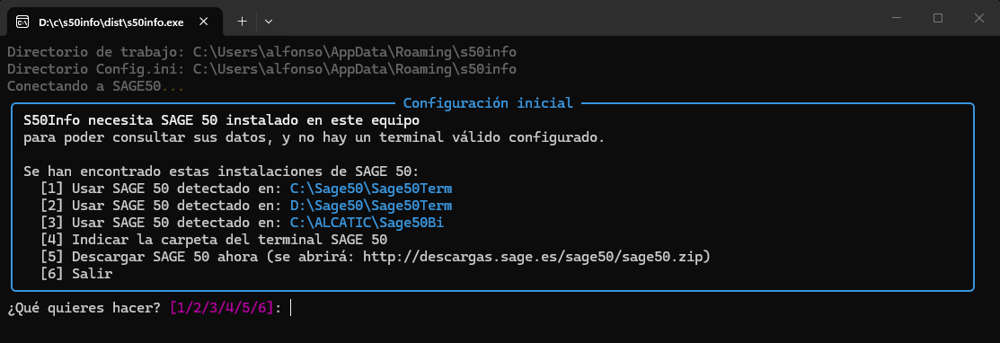

Instalar y configurar S50Info en Windows¶
Esta guía prepara un equipo Windows para ejecutar S50Info con la conexión de Sage 50 adecuada.
Antes de empezar¶
Necesitas acceso autorizado a la instalación de Sage 50, los datos de conexión de SQL Server y permisos para escribir en la carpeta de trabajo.
Protege las credenciales
config.ini puede contener credenciales. No lo publiques, no lo adjuntes a incidencias y limita sus permisos al usuario que ejecutará S50Info.
1. Descarga S50Info¶
Opción A — ZIP desde GitHub Releases¶
Descarga el ZIP con nombre versionado desde GitHub Releases.
El archivo se llama s50info-<versión>-win-x64-stable.zip. Descompríbelo en
una carpeta de tu elección.
Opción B — Microsoft Store (MSIX)¶
Busca S50Info en Microsoft Store o instala el paquete MSIX desde la
releases de GitHub.
El paquete de Store se identifica como InfoMSD.s50info.
Actualizaciones automáticas
Si instalas desde Microsoft Store, las actualizaciones llegan
automáticamente. Si usas el ZIP, ejecuta s50info update o descarga
la nueva versión manualmente.
Verificación del archivo¶
Verifica que el archivo procede de este manual o de una publicación oficial
del repositorio wertyMSD/s50info.
Si Windows SmartScreen muestra un aviso, no lo ignores automáticamente: confirma el origen del archivo y aplica la política de seguridad de tu organización.
2. Configuración inicial¶
Al ejecutar s50info por primera vez, el asistente de configuración
detecta que falta config.ini y te guía para indicar la ruta del terminal
de Sage 50.
La configuración se guarda en %APPDATA%/s50info/config.ini, separada del
ejecutable. Si necesitas ejecutar S50Info desde otro equipo o usuario,
repite el asistente.

Si Windows SmartScreen muestra un aviso al ejecutar el asistente, confirma el origen y aplica la política de seguridad de tu organización.
3. Verifica la conexión¶
Abre PowerShell en la carpeta de S50Info y ejecuta:
./s50info.exe info
La salida debe mostrar el grupo de comunes, los ejercicios accesibles y la versión de SQL Server. S50Info oculta la contraseña en esta salida.
Para comprobar otro grupo de comunes:
./s50info.exe info --grupo-comunes 4
Sustituye 4 por el grupo autorizado de tu entorno.
Checklist¶
- El ejecutable procede de una fuente verificada.
- La ubicación de Sage 50 corresponde al equipo actual.
-
config.iniexiste en%APPDATA%/s50info/y no está en una carpeta pública. -
infomuestra el grupo de comunes y los ejercicios esperados. - El usuario puede crear la carpeta
resultados.
Siguiente paso¶
Continúa con los primeros pasos para ejecutar una consulta de lectura y crear la primera exportación.
Enviar incidencia